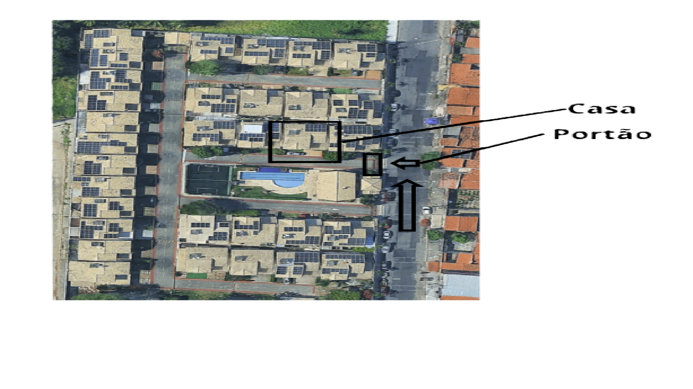
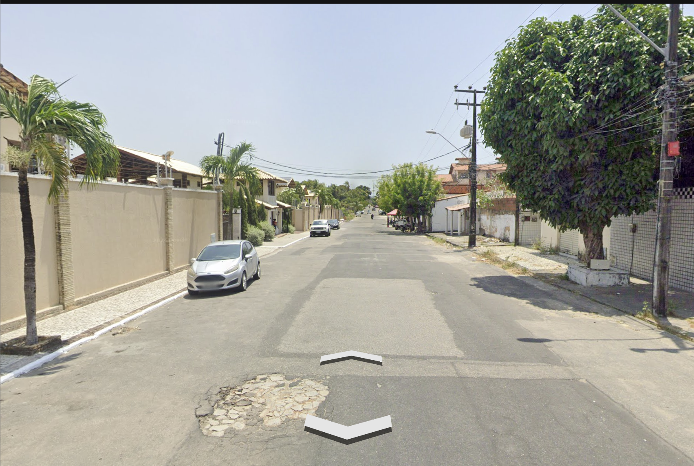
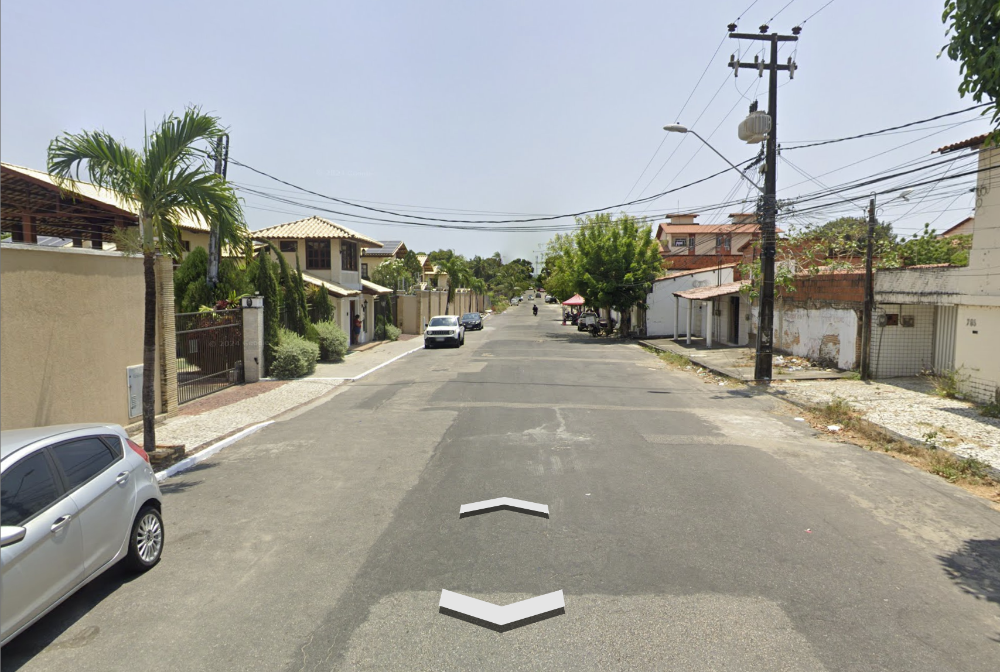
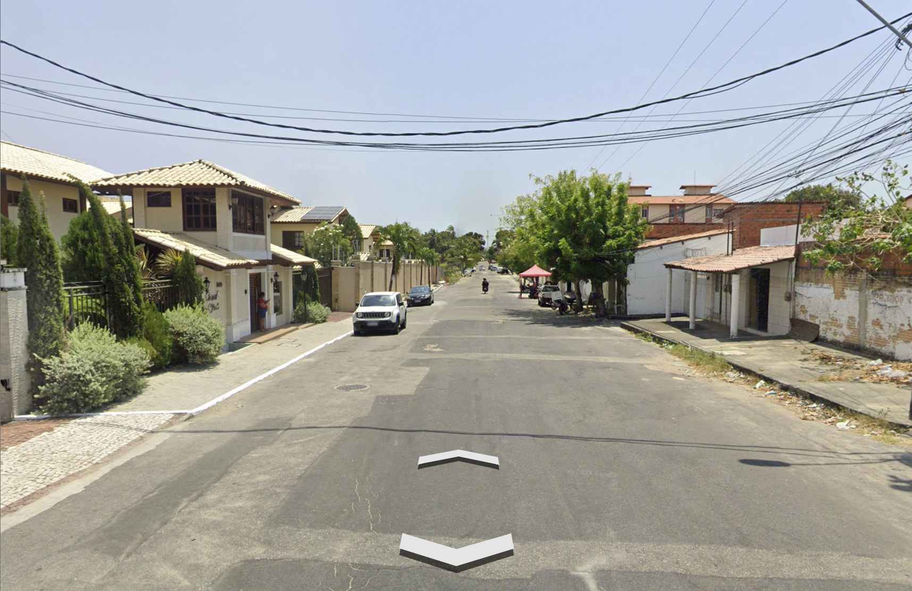
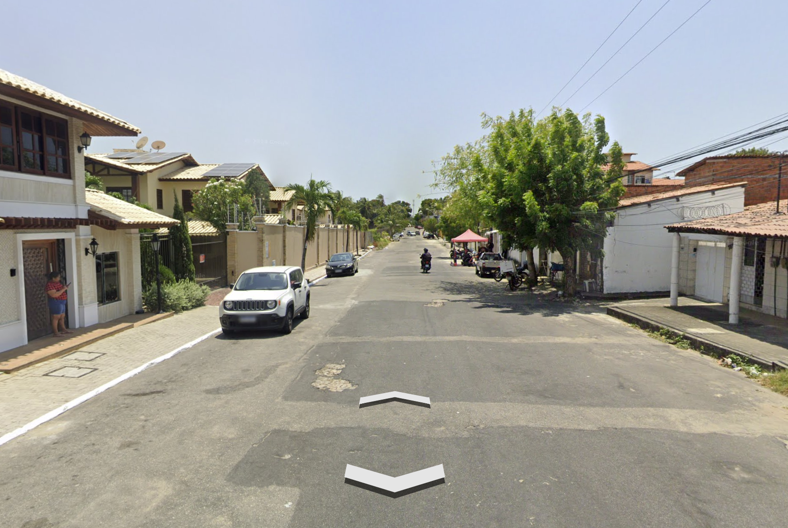
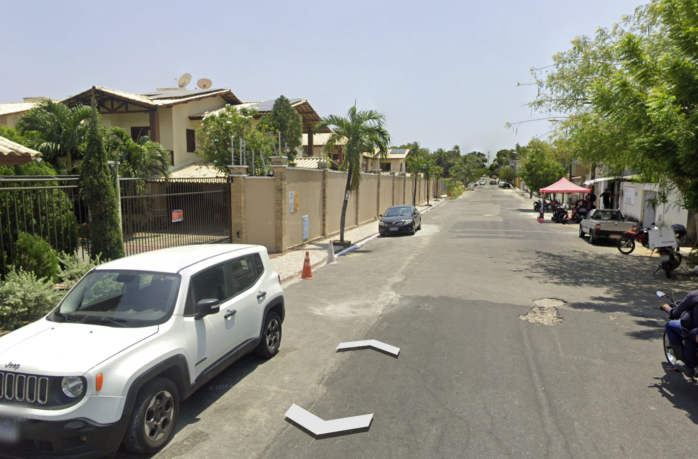
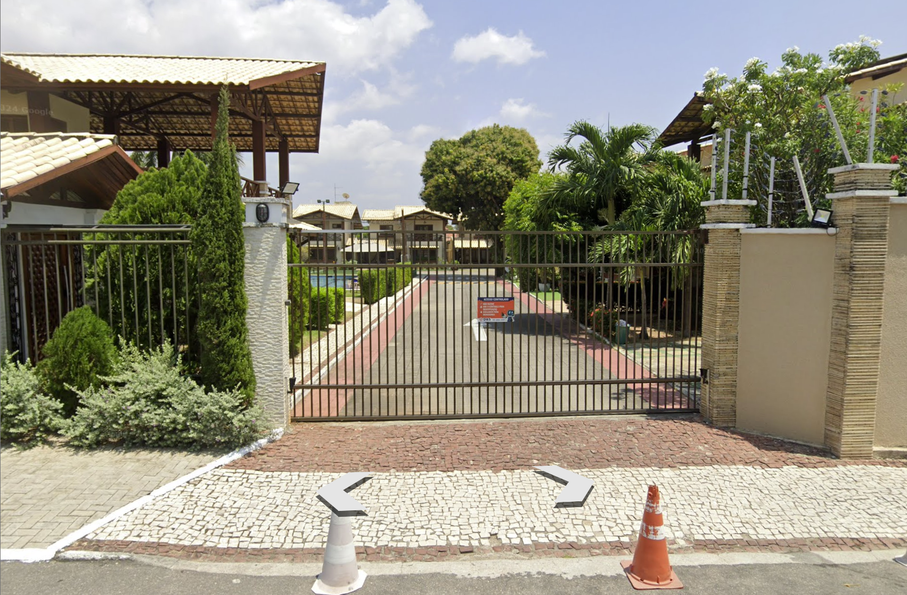

Instruções de Acesso
Confira a visão aérea e o passo a passo da fachada/rua para chegar com facilidade.
1. Visão Aérea do Condomínio
Mapa
Utilize o mapa de satélite acima como referência do portão de entrada e localização da residência.
2. Visão da Rua (Street View)
1 de 6





Deslize para o lado para ver o percurso da rua até o portão.